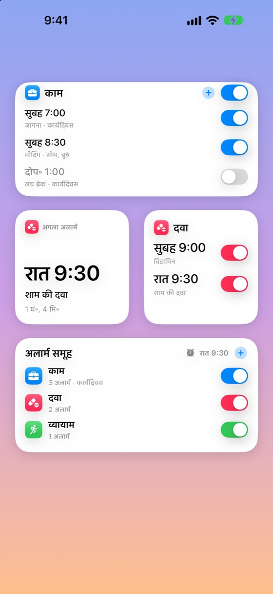
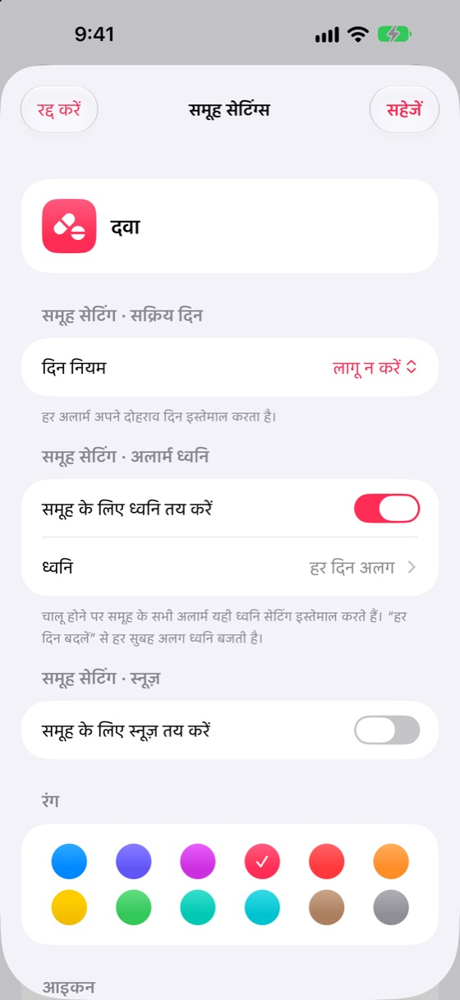
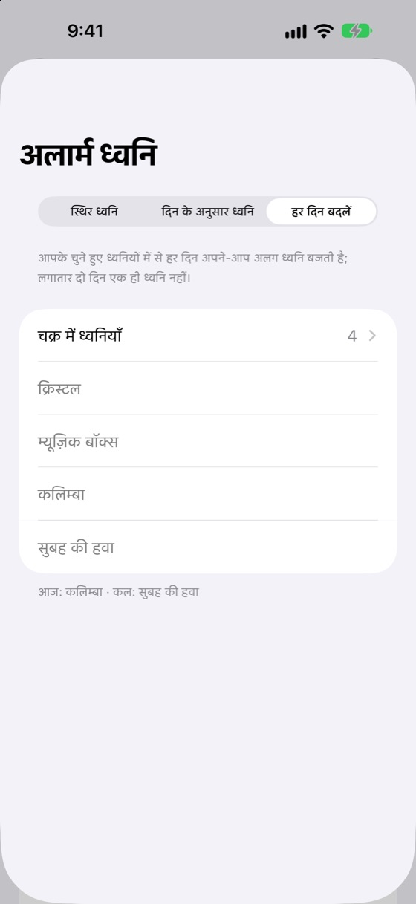
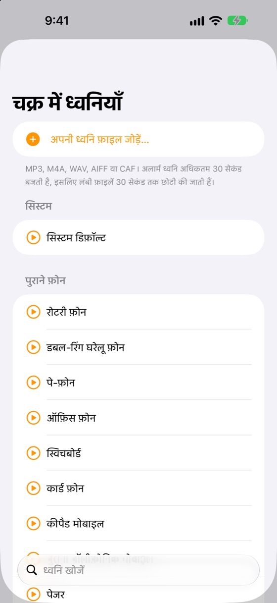
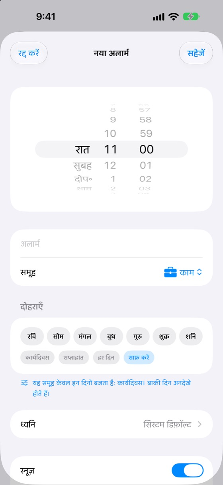
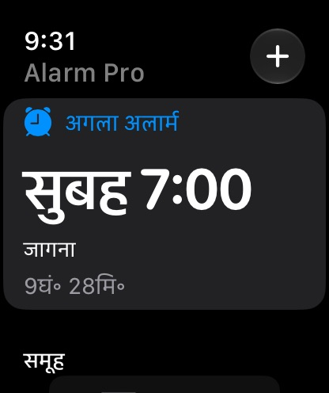
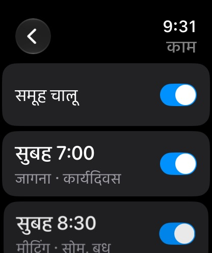

घड़ी ऐप में जो कमी है, वह सब
Alarm Pro iPhone की अंतर्निहित अलार्म प्रणाली का उपयोग करता है: साइलेंट मोड या फ़ोकस चालू होने पर भी अलार्म पूरी स्क्रीन पर बजते हैं।
खुलने वाले समूह
समूह एक के नीचे एक रहते हैं और टैप करने पर खुलते हैं। हर समूह और अलार्म का अपना चालू/बंद स्विच है।
समूह के दिन नियम
कार्यदिवस वाला समूह सप्ताहांत पर कभी नहीं बजता। दिन एक बार समूह में तय करें, वे सभी अलार्म पर लागू होंगे।
हर दिन नई ध्वनि
हर सुबह आपकी सूची से अलग ध्वनि बजे, या सप्ताह के हर दिन के लिए अलग ध्वनि चुनें।
66 मौलिक ध्वनियाँ + आपकी अपनी
पुराने फ़ोन की घंटियों से हल्की जागरण ध्वनियों तक, सब Alarm Pro के लिए बनीं। आप अपनी ऑडियो फ़ाइलें भी जोड़ सकते हैं।
विजेट और कंट्रोल सेंटर
होम स्क्रीन से ही समूह और अलार्म चालू/बंद करें, या विजेट पर टैप करके अलार्म जोड़ें और संपादित करें।
Apple Watch
अगला अलार्म देखें, समूह और अलार्म चालू/बंद करें, और कलाई से अलार्म जोड़ें या संपादित करें। कॉम्प्लिकेशन शामिल।
घड़ी से आयात
शॉर्टकट्स से अपने मौजूदा iPhone अलार्म एक बार में लाएँ। दोहराव छोड़ दिए जाते हैं।
स्नूज़ और लॉक स्क्रीन
स्नूज़ हर अलार्म या समूह के लिए तय करें। उलटी गिनती लॉक स्क्रीन और Dynamic Island में दिखती है।
13 भाषाएँ, लाइट और डार्क
आपके डिवाइस की भाषा में खुलता है और लाइट या डार्क रूप अपने-आप अपनाता है।
विज्ञापन-मुक्त प्रीमियम
Alarm Pro मुफ़्त है। एक छोटी मासिक सदस्यता iPhone और Mac पर विज्ञापन हटा देती है।
दान से समर्थन करें
ऐप पसंद आया? अपनी पसंद की राशि में एक बार दान करें।
करीब से देखें
हर स्क्रीन आपके डिवाइस की भाषा और रूप के अनुसार ढलती है।





सीधे आपकी कलाई पर
Apple Watch ऐप आपके iPhone के साथ सिंक रहता है: समूह बदलें, अलार्म संपादित करें और देखें आगे क्या बजेगा।


ध्वनि श्रेणियाँ
हर ध्वनि खास तौर पर Alarm Pro के लिए बनाई गई है।